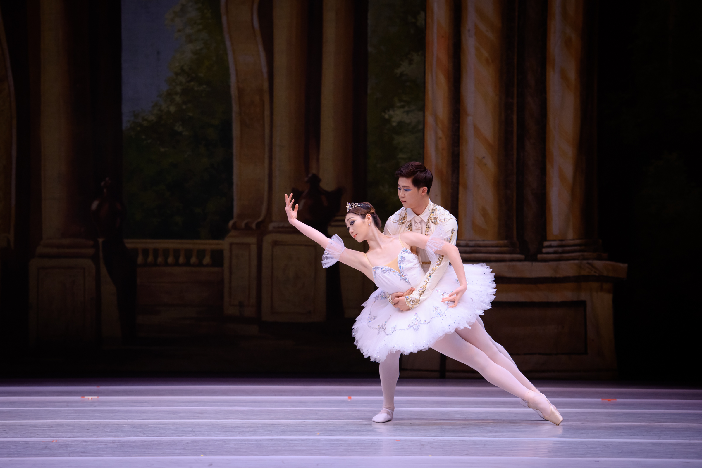
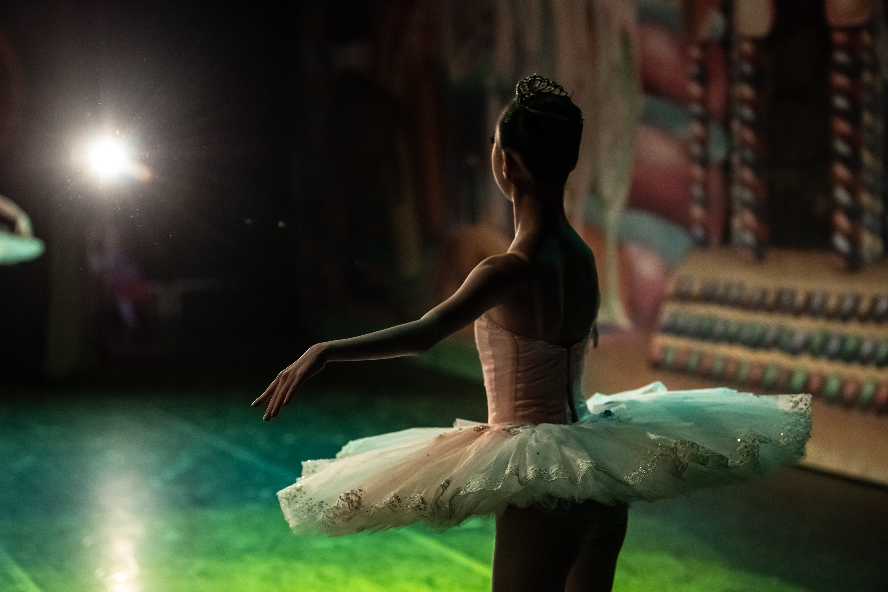

KR
EN
화성시티발레단 소개
화성시티발레단은 "대한민국 발레의 창작과 지역 예술의 대중화"를 핵심 가치로 2016년 창단된 민간 프로페셔널 발레단입니다.
창단 이래 탄탄한 예술적 기반 위에 젊은 예술가들의 열정과 실험정신을 더해, 고전 발레의 전통을 계승함과 동시에
모던 및 컨템퍼러리 발레 등 다양한 장르의 안무를 시도하며 독창적인 무대를 꾸준히 선보이고 있습니다.
발레단소개 더보기공연 정보
공연정보 더보기갤러리


